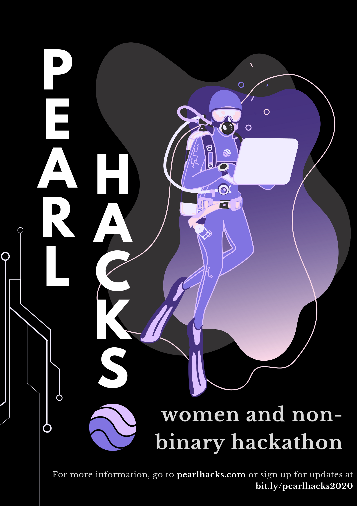
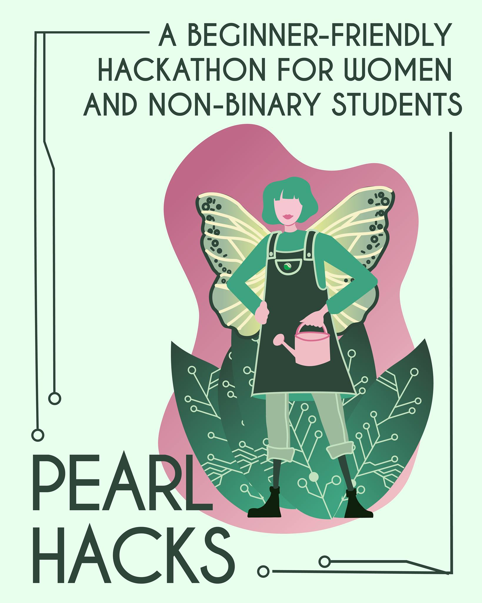
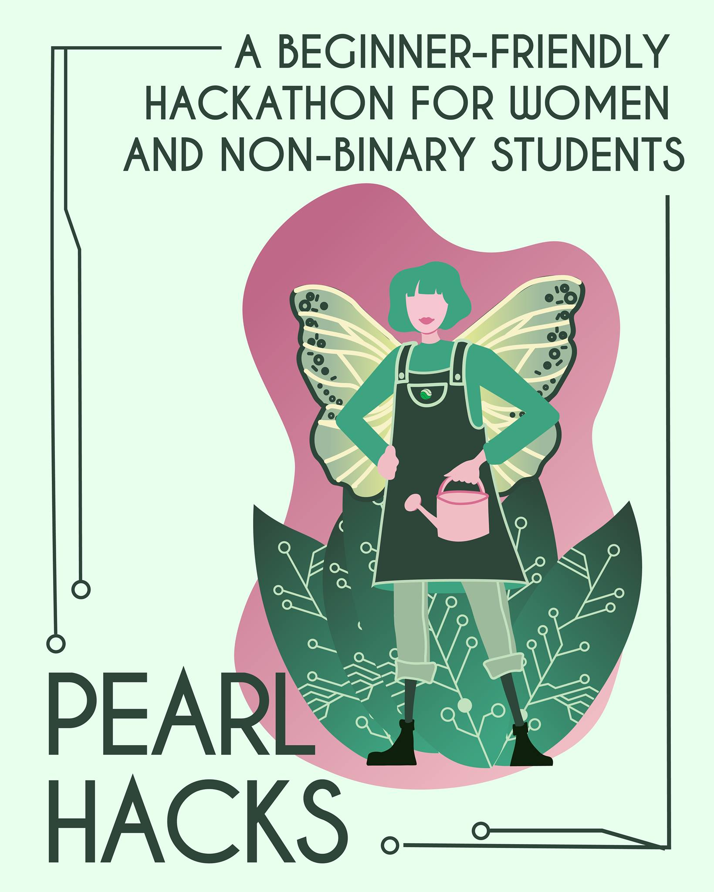
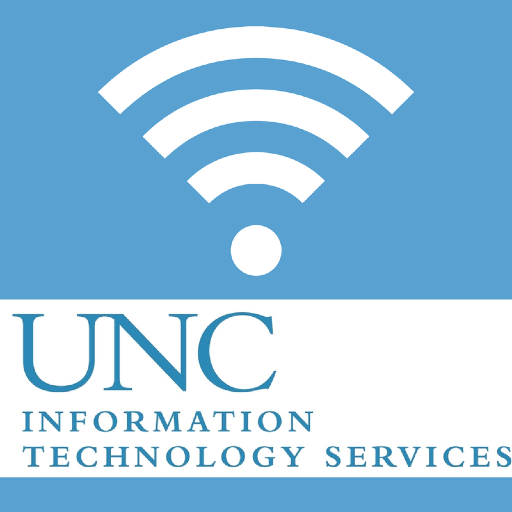

PEARL HACKS
-
Just as I was finishing my sophomore year of college, I was feeling a little discouraged in my field. I felt that computer science was incredibly intimidating, competitive, and well... draining and dull. It was then when I stumbled across Pearl Hacks, a beginner-friendly hackathon meant for women and non-binary to explore technology.
As someone who really felt lost in her major, I jumped at the opportunity to be part of something that would not only help me in finding my passion again, but something that also helped others who were just starting out.
 

It was through this organization that I rediscovered my love for computer science. The projects at the final demo showcase were INCREDIBLE and CREATIVE! My peers were supportive, talented, and motivated me to work harder. Last year's event was a huge success, raking in about 400 attendees! As the Director of UNC Marketing, I was tasked with figuring out how to make computer science appeal to people who weren't so well versed in it yet. This was fun for me because not only did I get to be creative, but I also got to apply my own experiences with struggling in the field. I knew what it was like to be terrified of pursuing tech - but I knew that it wasn't as scary as I initially thought it was. From making promo videos, to standing outside and talking to passing students, to documenting the whole process on social media - I enjoyed every second of my job - and I got to see it all pay off! I also got to participate in discussions on diversity and inclusion, and am in the process of becoming more well-versed in creating safe spaces wherever I go.
This year, I am now the Marketing Chair for Pearl Hacks 2021. With this event being completely virtual, there are many complications that have come up in the planning process - but so far, it has given me a unique perspective on strategy and empathy. So far I have been leading my team in creating and sharing content, brainstorming ways to present PH as an accessible and inviting event, and more.
Stay tuned to hear how it'll go!
TEACHING COMPUTER SCIENCE
JUNI LEARNING (2019)
Through this remote tutoring service, I taught online Python and Scratch classes (via Zoom!) to elementary school kids! I love talking to children, and nothing felt more rewarding than when their little eyes would light up once they finally understood a concept.
TEAM 110 (2018-2019)
Kris Jordan's COMP 110 class singlehandedly changed my college career. It was the most engaging, articulate, and fun introductory class I had ever seen, and I immeadiately knew that I wanted to be a part of it. The semester after taking the class, I applied and was offered a position as an undergrad TA for it!
My year on the team was filled with talking to students in office hours, filming tutorial videos , and brainstorming ways to make these complex concepts accessible to anyone (I do love a good analogy and pop culture reference).
This time opened up my eyes in terms of seeing how relevant and important computer science was, and solidified my love for helping others.
GIRLS WHO CODE (2019-2020)
This group offered me a chance to not only spend time with middle-school kids and practice teaching skills, but also share my love for comp sci! I saw myself in these young girls - as someone who had grown up doubting her place in the sciences, especially after a rough time in middle school math classes and high school coding classes. I got to be a sort of role model for these girls, while working with others who were just as passionate as I was about empowerment.
HELP! I NEED SOMEBODY ...
Not going to lie, I'm not going to pretend that I know everything about technology.
-

-
I applied for a position at the university technology help desk because I wanted to help people, and get to learn more about different software or hardware fixes.
When I first started - I was immeadiately hit with a sharp learning curve. So much paperwork, prolonged waiting for loading screens, and just being afraid and unsure about how to solve an unfamilar problem. It took me a while to get adjusted. I had to ask so many things from my senior coworkers, and often felt embarassed.
Now more than a year later... I turned out to be the one that new people were asking help from! I realized just how much knowledge I had amassed over my time at the help desk - both technical knowledge (Wifi connectitivity, software installation, dead batteries) and interpersonal knowledge. I used to DREAD small talk, but I soon became fascinated with the time that I spent with each new stranger that would come in. Sure, it started off with some complaints about technology, but some conversations turned out to get personal and even heartwarming. Learning about people's days, backgrounds, majors, favorite music, and more gave me a new appreciation for face-to-face human interaction and empathy - something that we greatly are lacking nowadays in general . I felt a great sense of responsibility and accomplishment when I would figure out a difficult problem, and after the customer would leave and thank me, sometimes it felt like I made a new friend.
TL;DR - I put my drink way too far from my computer now because I'm anxious about water damage and think about how I miss talking to new people every day.
MARKETING AND DEVELOPMENT
UNC STUDENT TELEVISION (2019-2020)
College kids are always busy. They're also always buzzing for opportunities.
The student televison group was one of my first loves on UNC's campus, and I got the chance to serve as their social media manager for one year. In this position, I made sure to draft enticing social media captions about current events, remain in contact our marketing director about creating graphics, and maintain a presence on STV socials. I wanted to draw in audiences who didn't normally consider student TV to be their "thing". This came naturally to me because I loved being a part of the club so much, but I also was faced with some challenges. I learned how to set deadlines within a team and communicate my needs clearly so posts could go up in time. I also was pushed in brainstorming new ways to present similar information, especially for posts leading up to a single event.
ENABLING TECHNOLOGY CLUB (JANUARY 2020 - PRESENT)
One of the coolest organizations on campus is the Enabling Technology Club, which aims to get students together in order to make accessible games for young disabled children. I admire this mission greatly, and am lucky to be the communications chair for the organization. I am tasked with sending out emails to club members and brainstorming ways to engage students, especially during this difficult time of remote classes.
LAB! THEATRE (APRIL 2020 - PRESENT)
What's better than loving theatre? Getting to tell everyone how much you love theatre!
As the marketing director for LAB!, I get to manage a team of designers, photographers, and writers in creating and distributing content about upcoming events, opportunities, and announcements from LAB! Theatre. This position has taught me so much about leadership - in cross-communication, delegation, and empathy. There are times where I have to transfer responsibilities to other positions, or take them on myself - but I knew that it was for the best in the long run.
I also was tasked with preserving a consistent social media presence, creating small graphics on Adobe Spark, and brainstorming marketing campaigns that will draw in the public eye. I also update the website with necessary information!